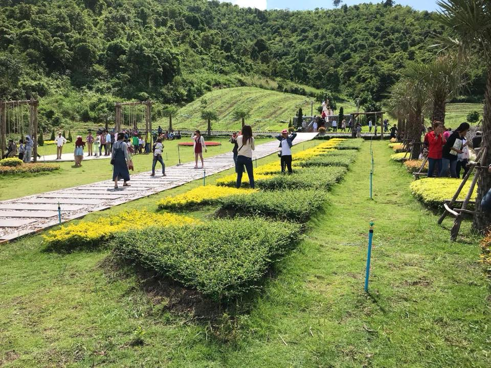
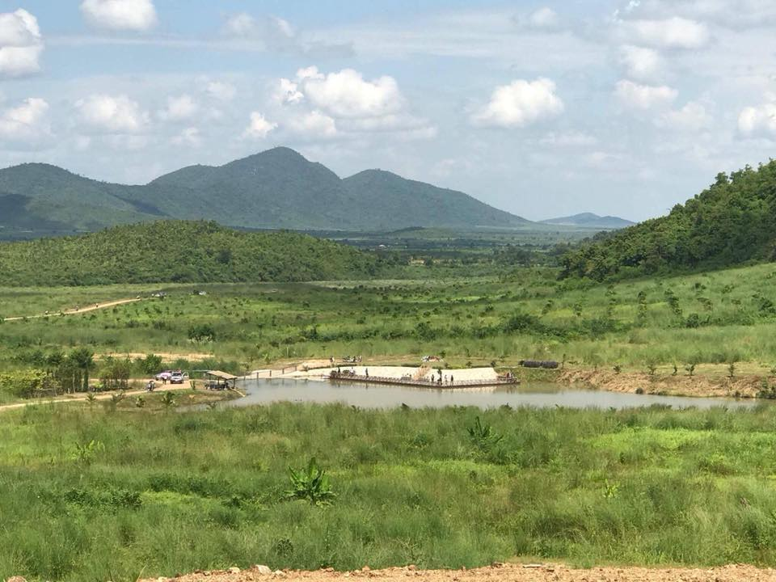

សូមស្វាគមន៍មកកាន់តំបន់ទេសចរណ៍កម្ពុជា
អន្លង់ភ្ញៀវ រមណីដ្ឋានអន្លង់ភ្ញៀវជារមណីយដ្ឋានធម្មជាតិមួយដែលត្រូវបានគេកែឆ្នៃ និង រៀបចំឡើងនាពាក់កណ្តាលឆ្នាំ ២០១៧ នៅតំបន់ព្រៃភ្នំ ដែលមានទេសភាពដ៏ស្រស់បំព្រង់គ្រប់រដូកាល នៃតំបន់ភ្នំអន្លង់ភ្ញៀវ ។ ប្រសិនបើលោកអ្នកបានទៅដល់រមណីយ ដ្ឋានអន្លង់ភ្ញៀវនោះវាពិតជាធ្វើឱ្យលោកអ្នកមានអារម្មណ៍ជ្រះថ្លាក្រៃលែងកាលបើបានឃើញនូវទេសភាពប្រៃភ្នំដ៏ខៀវស្រងាត់នេះ ។
រមណីដ្ឋានអន្លង់ភ្ញៀវជារមណីយដ្ឋានធម្មជាតិមួយដែលត្រូវបានគេកែឆ្នៃ និង រៀបចំឡើងនាពាក់កណ្តាលឆ្នាំ ២០១៧ នៅតំបន់ព្រៃភ្នំ ដែលមានទេសភាពដ៏ស្រស់បំព្រង់គ្រប់រដូកាល នៃតំបន់ភ្នំអន្លង់ភ្ញៀវ ។ ប្រសិនបើលោកអ្នកបានទៅដល់រមណីយ ដ្ឋានអន្លង់ភ្ញៀវនោះវាពិតជាធ្វើឱ្យលោកអ្នកមានអារម្មណ៍ជ្រះថ្លាក្រៃលែងកាលបើបានឃើញនូវទេសភាពប្រៃភ្នំដ៏ខៀវស្រងាត់នេះ ។ Ads by AdAsia End of ad break in 9 s You can close Ad in 4 s រមណីដ្ឋានអន្លង់ភ្ញៀវមានទីតាំជាប់ទៅជើងភ្នំ អន្លង់ភ្ញៀវ ស្ថិតក្នុង ឃុំ អូរសារាយ ស្រុកត្រាំកក់ ខេត្តតាកែវ ។ បើលោកអ្នកចង់ធ្វើដំណើរទៅលំហែរកាយនៅរមណីយដ្ឋានអន្លង់ភ្ញៀវ លោក អ្នកត្រូវ ធ្វើដំណើរតាមផ្លូវជាតិលេខ ៣ ដល់ទីប្រជុំជន អង្គតាសោម មានផ្លូវបំបែកជាបួន រួច បត់ទៅលិចត្រង់ធ្វើ ដំណើរប្រហែល ៥០ គីឡូម៉ែត្រ នោះនឹងបានឃើញរមណីដ្ឋានអន្លង់ភ្ញៀវ ដែលស្ថិតនៅក្នុង ឃុំ អូរសារាយ ស្រុកត្រាំកក់ខេត្ត តាកែវ ។
© រក្សាសិទ្ធិគ្រប់យ៉ាងដោយ Visit Cambodia tours ឆ្នាំ២០១៨
អាសយដ្ឋាន
អគារលេខ ៣០៨ មហាវិថីព្រះមុន្នីវង្ស
សង្កាត់បឹងរាំង ខណ្ឌដូនពេញ
Visit Cambodia tours ជាគេហទំព័រ សម្រាប់ធ្វើការស្វែងរកកន្លែងកម្សាន្ត និង បញ្ជាក់បន្ថែមនៅពត័មានរបស់ខេត្ត។
.jpg)